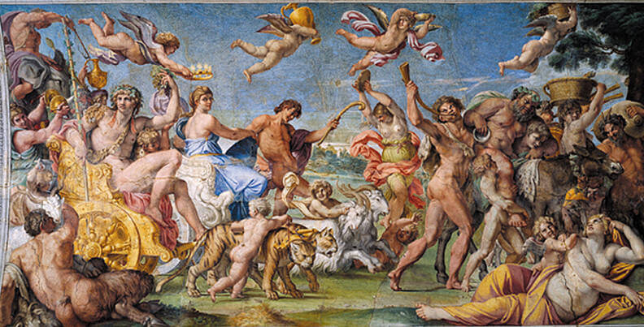

Il Barocco è un movimento culturale che nasce a Roma nel XVII secolo e si spinge fino ai primi
decenni del
XVIII
secolo. Coinvolge le arti figurative ma anche la musica, la letteratura e la filosofia. Sull’origine del
nome Barocco ci sono varie ipotesi: c’è chi lo fa derivare dal francese “baroque”, che significa “bizzarro”
e chi dal portoghese “barocco”, nome dato a una perla irregolare.